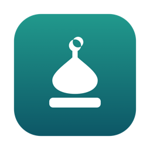
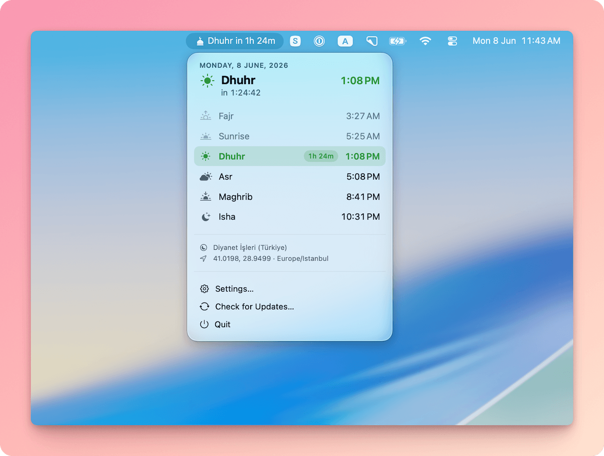
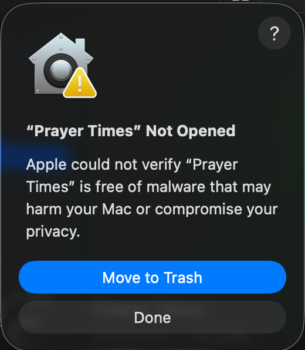
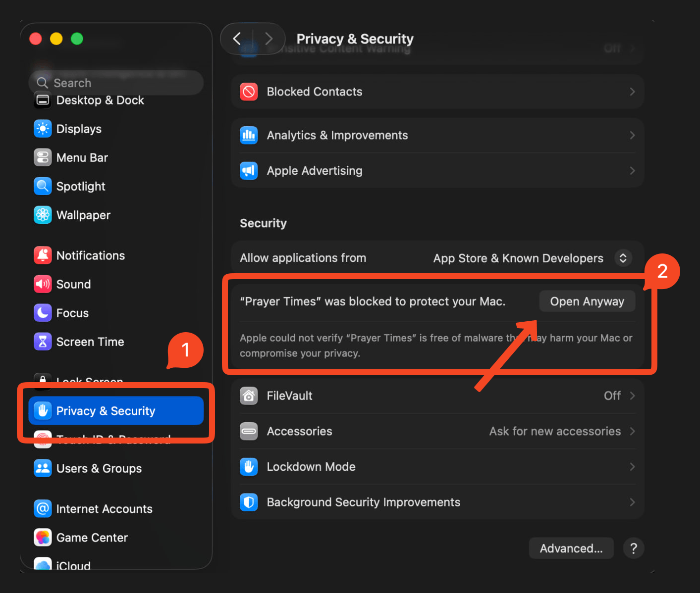

A free, native macOS menu bar app for Islamic prayer times — Adhan notifications & a live countdown to the next Salah.
macOS 14 Sonoma or later · Universal (Apple silicon & Intel) · Free & open source

Next prayer and a live countdown, with seven label styles and a mosque glyph.
10 methods incl. Diyanet, JAKIM (Malaysia) & Kemenag (Indonesia) — each validated to ±1 min — plus madhab & high-latitude rules.
Prayer-time, early reminder, and iqamah alerts — each with its own sound.
Plays the complete Adhan (Makkah / Madinah) at prayer time, with a stop control.
Manual coordinates or one-shot auto-detect with country → method mapping.
English, العربية (RTL), Türkçe, and বাংলা — with Liquid Glass on Tahoe.
Via Homebrew:
brew install --cask tareq1988/tap/prayer-timesOr download the latest .zip and drag it to Applications.
First launch (unsigned build). The current builds are ad-hoc
signed (not yet notarized), so on first launch macOS shows
"Prayer Times" Not Opened and blocks it. To open it, go to
System Settings → Privacy & Security and click
Open Anyway, then Open in the confirmation
dialog. (Or run
xattr -dr com.apple.quarantine "/Applications/Prayer Times.app"
in Terminal.)


Yes — completely free and open source under the MIT license. No subscription, no ads, no account, no tracking.
Diyanet (Turkey), Muslim World League, ISNA (North America), Umm al-Qura (Saudi Arabia), Egyptian, University of Islamic Sciences Karachi (Pakistan), Moonsighting Committee, JAKIM (Malaysia), Kemenag (Indonesia), and a fully Manual method — with Standard or Hanafi Asr and high-latitude rules.
Yes. The full Adhan (Makkah or Madinah) plays at prayer time with a Stop control, alongside lighter per-prayer notification sounds.
Yes. Prayer times for your location (Salah / Namaz) are computed on-device from your coordinates — no internet connection, no telemetry, no ads.